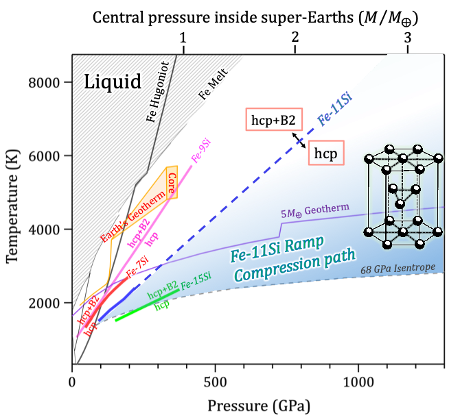
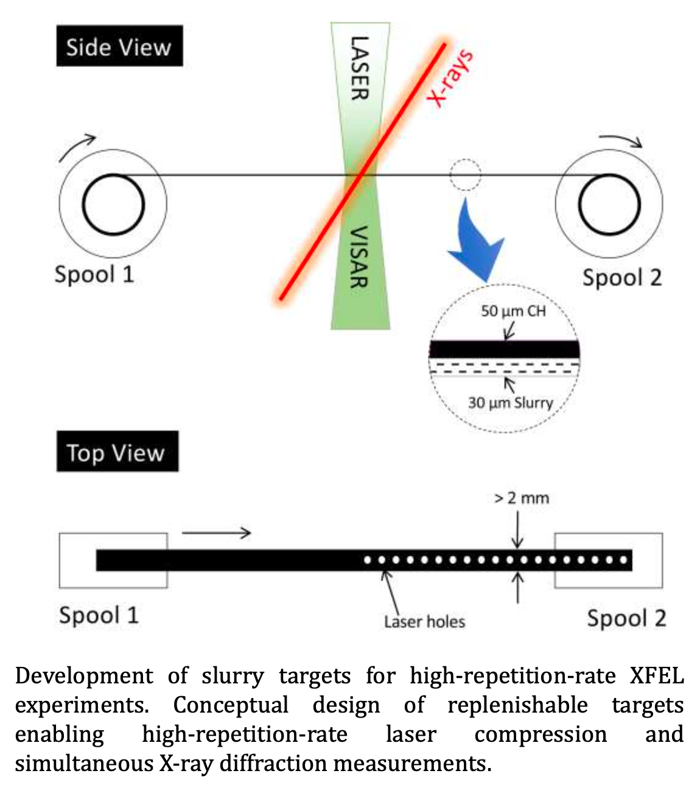
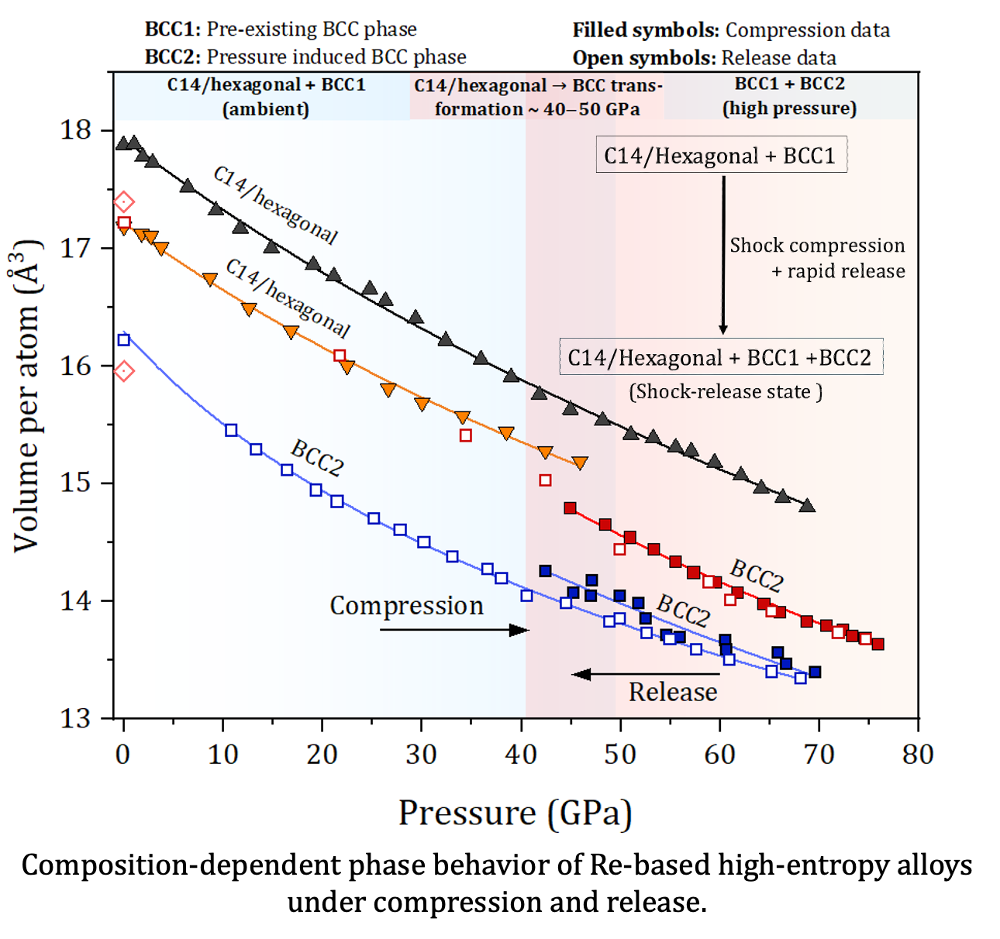
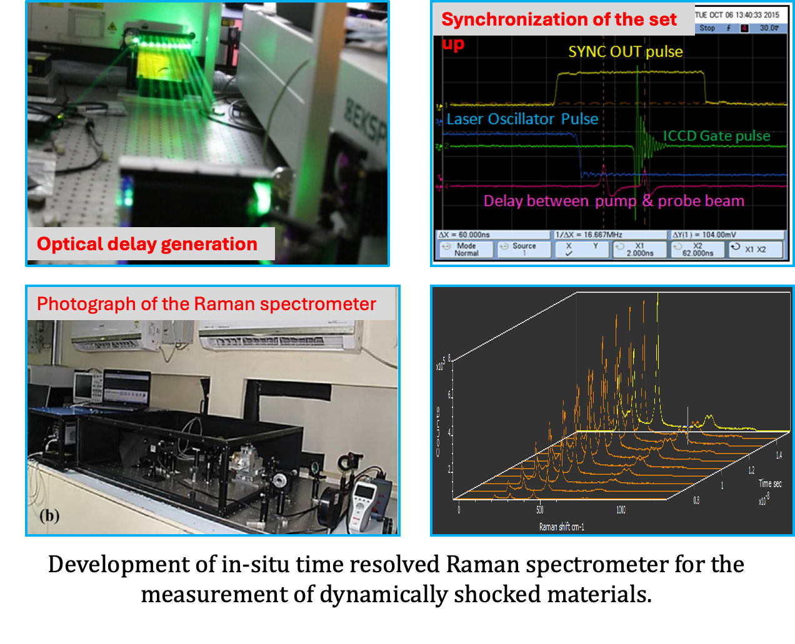
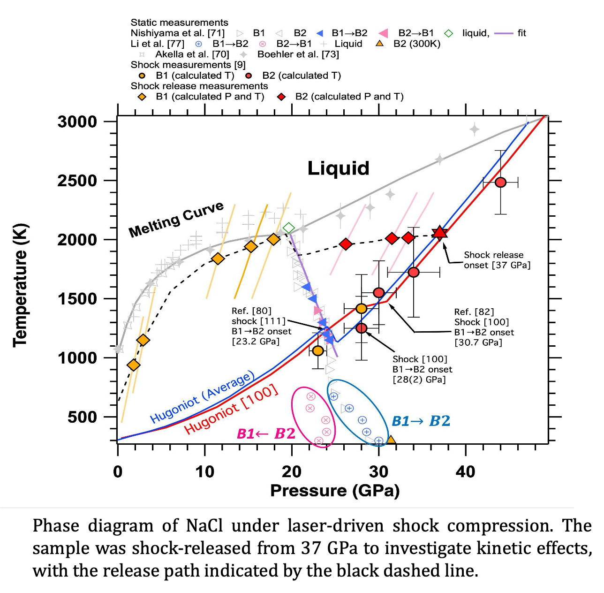
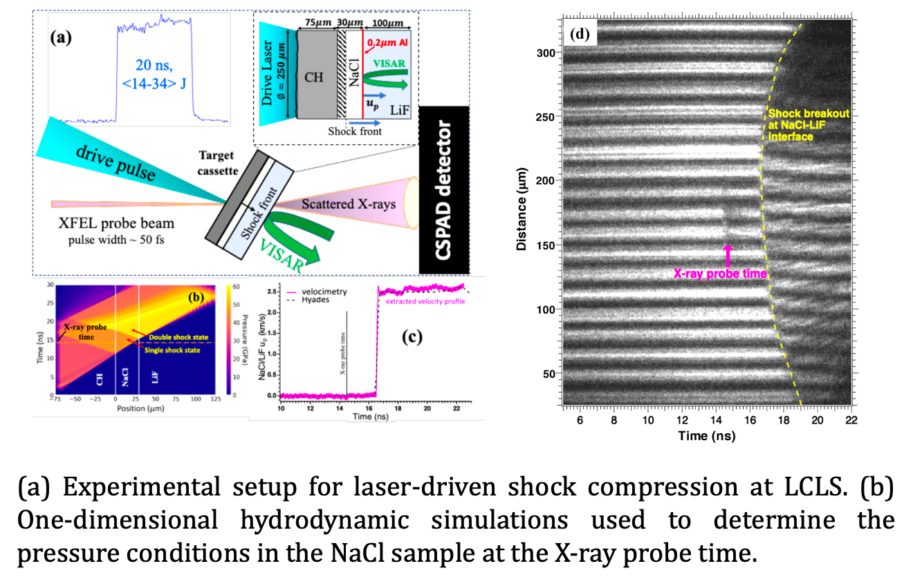

Extreme planetary materials
Fe–Si alloys at super-Earth core conditions
Ramp-compression studies constrain the phase stability and structural behavior of Fe–11Si to pressures approaching the terapascal regime.
I develop and apply advanced experimental platforms to understand phase transitions, kinetics, structural transformations and material behavior under extreme pressure, temperature and strain-rate conditions.
My work combines laser-driven shock and ramp compression, in-situ x-ray diffraction, velocimetry, time-resolved Raman spectroscopy, ion diagnostics and high-repetition-rate target technologies.
From instrument development to experiments at major laser and XFEL facilities, my research connects experimental design, diagnostics and materials physics.
Representative projects spanning dynamic compression, diagnostics, target development and high-pressure phase behavior.

Ramp-compression studies constrain the phase stability and structural behavior of Fe–11Si to pressures approaching the terapascal regime.

Structural transformation pathways in Re-rich and Re-poor refractory high-entropy alloys under shock compression and release.

Ultrafast x-ray diffraction and velocimetry reveal shock-compression and release pathways through the B1, B2 and liquid states.

Development of extruded slurry targets designed to enable rapid target replenishment for future high-repetition-rate experiments.
Selected instrumentation and facility development experience.




Email: vrastogi@uab.edu
Alternate: vrastogi.physics@gmail.com
ORCID · Google Scholar · LinkedIn